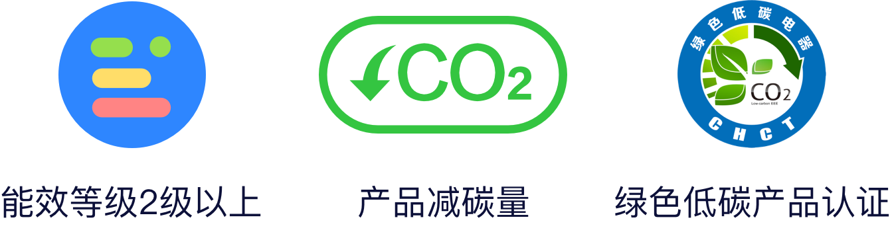

型号：SCWF508EV Z1
生产者名称：重庆美的通用制冷设备有限公司
碳排放是关于温室气体排放的一个总称，温室气体中最主要的气体是二氧化碳。大量排放出的CO2等多种温室气体排放在大自然中产生“温室效应”。温室效应引起气候变化全球变暖成为了现代社会的一个迫在眉睫的问题。
家用电器已经成为居民能源消耗的第二大来源，高达30%的居民碳排放来自于家用电器。当前我国在建立完善的能效标识法规以及执行体系的同时，还需要建立更加全面科学的家电产品温室气体排放评价标准及标识体系。
我们平时选用电器时，应先查看产品减碳量、低碳产品认证等环保信息，选用节能低碳产品，共建绿色家园。
